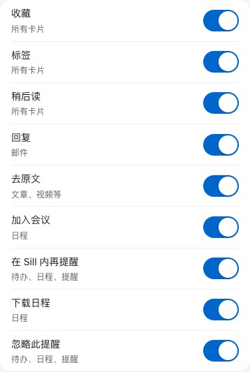
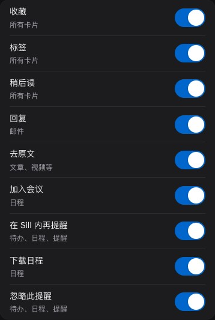
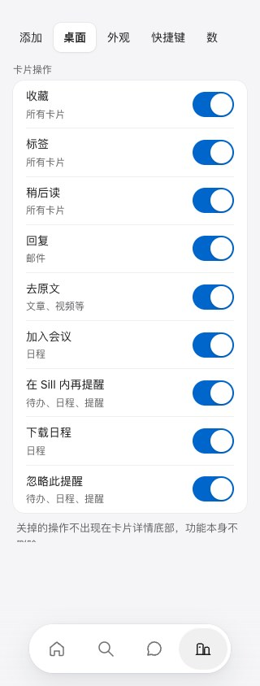
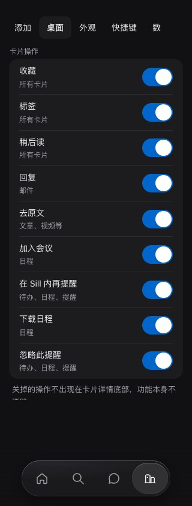
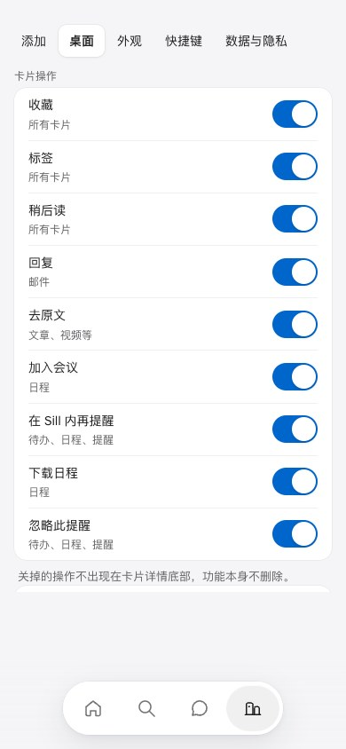
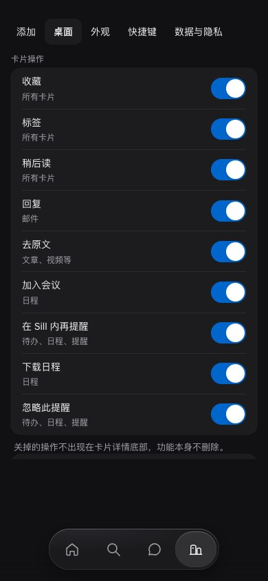
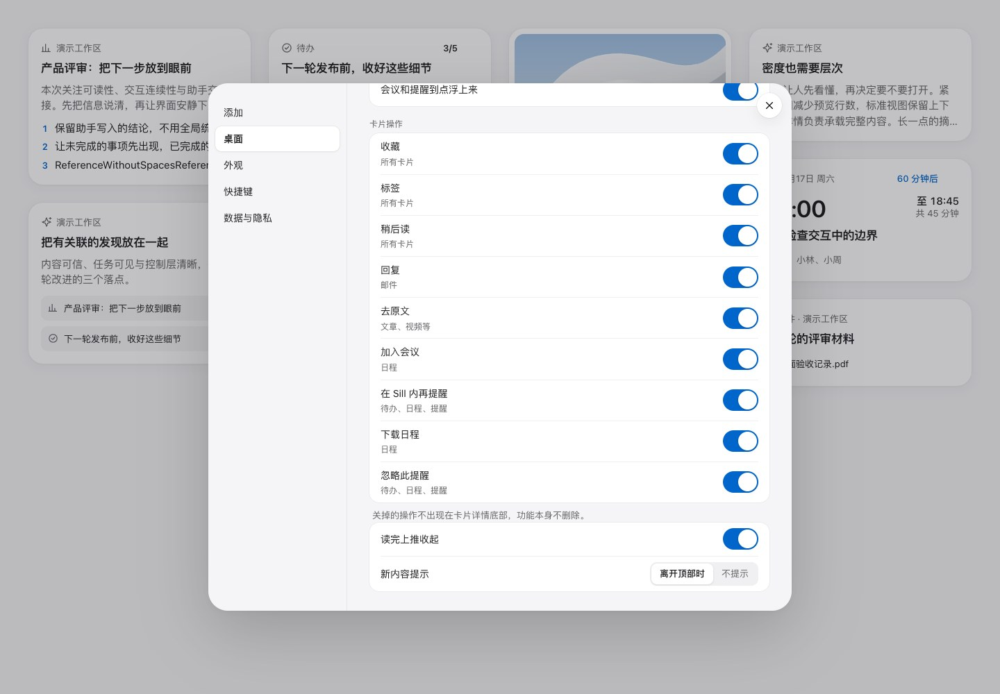
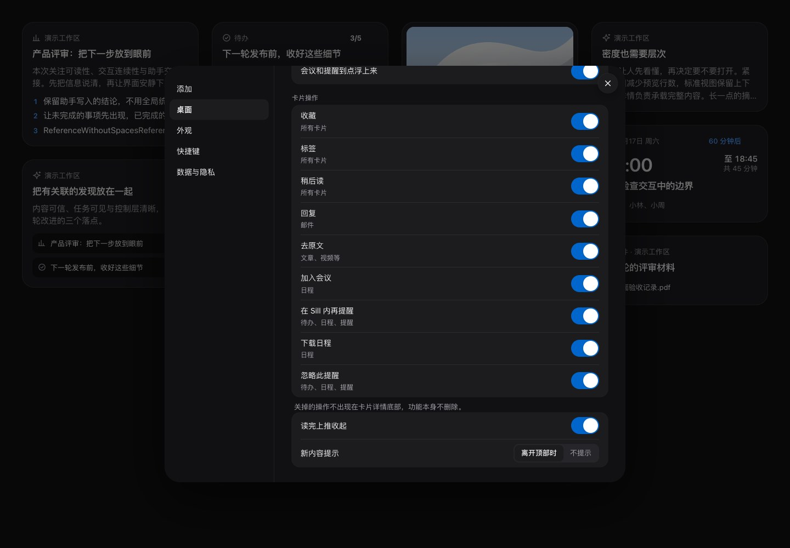

卡片操作 · 名称下方加适用类型示例
用户选择 B，见 ADR 0042。不采用 A 无说明或 C 将示例挤到开关左侧。只用原有 small / muted；名称、开关顺序、状态和隐藏偏好不变。
全部截图来自真实实现与合成卡片，没有临时样式。示例由统一文案文件提供，并通过 aria-describedby 关联开关；不把示例并入名称，也不承诺所有卡片状态下都出现该动作。
设置分组 · 实际页面局部


手机 320 / 390




桌面 1440


九个开关均能滚动到达；焦点和未修改的偏好保留，来源卡片不变。Mac 未改，Safari 与真机未检查。